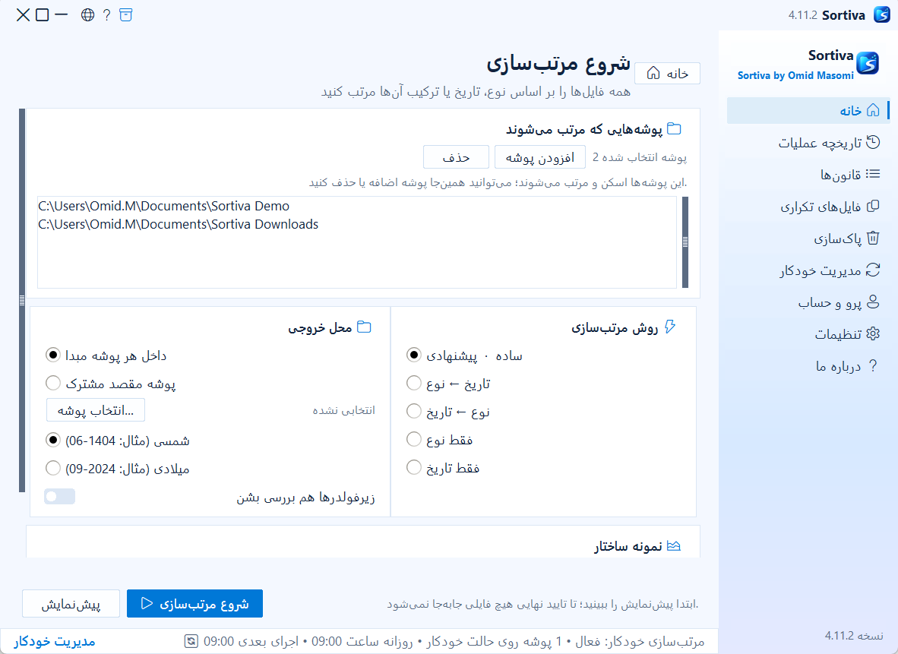

مرتبسازی
از پوشهٔ شلوغ تا ساختار روشن
نوع، تاریخ، تاریخ واقعی عکس یا نام فایل — ساختار دلخواه را انتخاب کن و همانجا ببین هر فایل کجا میرود. پوشهها شمسی یا میلادی ساخته میشوند.
- صفحههای آماده: تصاویر، ویدیو، اسناد، آرشیو، موسیقی، نرمافزار
- گروهبندی فیلم و سریال، GPS، Artist/Album
- مسیرهای طولانی و جابهجایی بین درایوها با Cancel